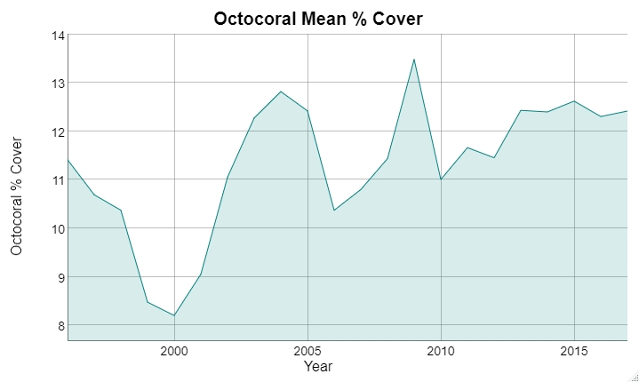

Relevant analysis in 2018 from @mhepner presented in the FKNMS infographic.
Raw RVC data used in that analysis is accessible via sefsc.noaa.gov.
Species richness, Shannon diversity, Simpson diversity, and functional diversity across years. The data correspond to all sampling events in a given year including all levels of protection, strata, and subregion. The units are in mean effective number of species and error bars denote +/- SE. From Hepner, M. E. (2017). Reef Fish Biodiversity in the Florida Keys National Marine Sanctuary.

The MBON IOOS Portal was used to create a data view comparing Reef Visual Census data for grouper and parrotfish. A screenshot of the resulting view updated last on 2019-06-19 is below:
fk_nms_wkt <- "POLYGON ((-83.15 25.65, -80.066667 25.65, -80.066667 24.3, -83.15 24.3, -83.15 25.65))"scaridae_species <- "Scarus iseri"
scaridae_name_safe <- sanitize_query_id(scaridae_species)
if (has_cache(scaridae_name_safe)){
scaridae_occurrence <- load_cache(scaridae_name_safe)
} else {
scaridae_occurrence <- robis::occurrence(
scaridae_species,
geometry = fk_nms_wkt
)[c('eventDate', 'species', 'occurrenceStatus')]
save_cache(scaridae_name_safe, scaridae_occurrence)
}
# write.csv(scaridae_occurrence, "scaridae_occurrence.csv")lutjanidae_species <- "Ocyurus chrysurus"
lutjanidae_name_safe <- sanitize_query_id(lutjanidae_species)
if (has_cache(lutjanidae_name_safe)){
lutjanidae_occurrence <- load_cache(lutjanidae_name_safe)
} else {
lutjanidae_occurrence <- robis::occurrence(
lutjanidae_species,
geometry = fk_nms_wkt
)[c('eventDate', 'species', 'occurrenceStatus')]
save_cache(lutjanidae_name_safe, lutjanidae_occurrence)
}# write.csv(lutjanidae_occurrence, "lutjanidae_occurrence.csv")
occurrences <- rbind(
scaridae_occurrence, lutjanidae_occurrence
)
occurrences$occurrenceStatus <- plyr::revalue(
occurrences$occurrenceStatus,
c("present"=1)
)
write.csv(occurrences, "occurrences.csv")from plo7y.reporters.ts_compare import ts_compare
ts_compare(
"occurrences.csv",
x_key="eventDate",
y_key="occurrenceStatus",
y_group_by_key="species",
)